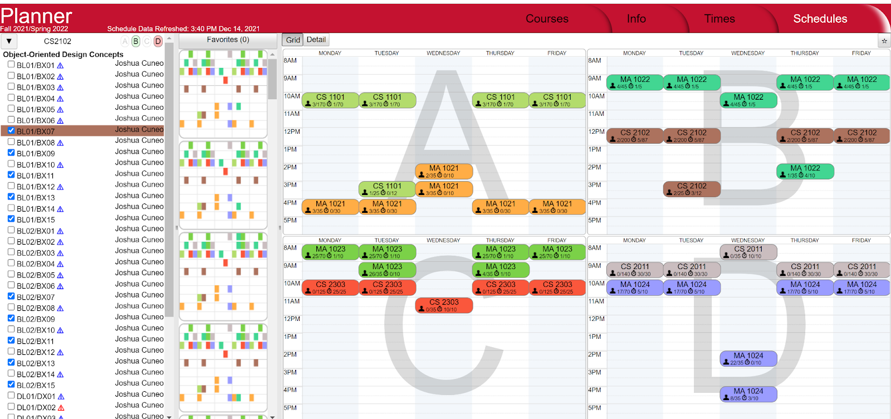

UX Case Study: WPI Planner
About the Planner
The WPI Planner is the existing solution for course planning at WPI. Created by students for students, it helps with the time consuming, frustrating process of schedule planning. It shows class offerings each term and information about those classes, and can generate schedules based on selected courses.
However, the course planning process goes beyond what this one site can provide. Planning a schedule goes beyond what a student needs term-to-term, and includes degree requirements, course reports, and yearly offerings. We can improve the WPI Planner site to be an even better experience for users on the site as is, and become more of a “Registration Hub” rather than “just another tool” available during registration planning time.
All-In-One Registration Experience
As WPI students, we've been through the course registration process time and time again. As engineers, we know the importance of optimization and efficiency, and as UX designers, we've learned how to create a positive experience for users.
Problem Statement:
The registration process is an intense and stressful time for students. There are various
tools in place that are utilized for different parts of the registration process, but this tends to disrupt any sense of efficiency
or convenience when students go through the steps to find a balanced schedule.
Possible Solution:
Integrate all course planning and registration information into a comprehensive and
user-friendly experience to mitigate the stress of scheduling.
Our Process
- Know your Brand - Implies discovering the features and usage of the planner.
- Identify the users - Identifying the main users of the planner and empathizing with the users to understand their requirements.
- Understand the experience - Learn about the process to uncover potential issues.
- Recognize the issues - Identify the underlying UX/UI issues
- Market research - research to investigate other universities' systems and their solutions to issues we've identified
- Articulate solutions - Devise solutions for the underlying problems
- Design Goal setting - Rethinking the design and setting goals for final design
- Prototyping - visualization of design ideas
Users and User Needs
Most needs and wants fall into one of two categories: short term planning and long term planning.
Short term planning is what a student is adding to their saved schedule for the next semester. This category includes needs such as "classes do not have time conflicts" for all students and "I am taking all of the classes I need to graduate" for rising seniors. Currently, the solution for this aspect of planning is solved by the Workday schedule builder or planner.wpi.edu. However, while these tools will tell you if classes are possible to take together, it is not a tailored experience and students are not warned if their classes do not provide relevant credit to their major. This type of issue currently relies on long-term planning to be solved, but it should also be prevented at the short-term level.
Long term planning includes things like creating a four year plan, or investigating prerequisites for higher level classes. Current resources include: text-based descriptions of requirements in the course catalog; major tracking sheets; and talking to advisors. This aspect is much less formalized than short term planning, but is equally if not more important.
Both forms of planning should be integrated into the same tool because of how often they inform each other. Short term planning can be a manifestation of previous long term planning, and unexpected short term opportunities will create need for long term reworks.
Who uses these tools?
Students
- Needs to choose classes that do not conflict
- Needs to know if they have the necessary background for a class
- Want to create "optimal" schedules
Advisors
- Needs to be able to easily assist multiple students
- Needs to know students' experience level and goals
- Wants to be able to quickly and easily provide feedback on plans
Student User Profiles
Freshmen
- Building their first schedules
- Unaware of course workloads and expectations
- May not be certain of their major yet
"I'd hate for someone unsuspecting to end up in like, Soft Eng and RBE2002 … bc[sic] no one told them about the workload"
Sophomores, Juniors
- Needs to know prerequisites for higher level courses they are interested in
- Wants to be sure they are on track for filling graduation requirements
- May be interested in knowing which classes run only every other year
"There are also some [descriptions] where the requirements are just false. Software security engineering says it requires soft eng, but they are unrelated"
Seniors
- Needs to know exactly which classes they need to graduate on time
- Needs to know when these specific classes will be running
- Taking high level courses and MQP requires careful workload planning
"If machine learning wasn't offered d term I wouldn't be able to graduate this year"
Market Research
For this project, we took a look at some course planning and registration systems from other colleges. This research was somewhat difficult, as most colleges have at least some of their course materials locked behind a student login. Thus, we often need to look at the documentation about the system, rather than the system itself.
It seems that most of WPI's peer institutions for institutional research ave a rather disconnected system for planning courses. RPI, RIT, Stevens, and Case Western all appear to have a system where you register for a bunch of classes individually, rather than being able to see a whole schedule laid out. Case Western does seem to have a Shopping Cart system, likely similar to WPI's old wpi.collegescheduler.com system. However, we can't know if this actually lets you organize full schedules, since we'd need a Case Western login.
Northeastern University is the exception to this pattern. They have created a portal somewhat like Workday where you can look at available classes, create a schedule (or plan, in their words), and then register for that schedule at registration time. Northeastern's portal also gives much more information about each course and where it fits into a student's schedule, including pre- and co-requisites, as well as “attributes”, which seem to be information on what graduation requirements a class will fulfill. This is much more information than WPI's systems include, all in one place.
Some improvements still could be made, though. The system is not very intuitive, as it requires many tutorial videos and explainer articles to understand. Information on course reports appears to be available through another part of the system, but it's not offered directly alongside course offerings.
Identified Issues
Most of the issues with the current WPI Planner can be separated into two categories. Firstly, we have broad issues with the experience as a whole. These pertain to how the tool can better serve students, by giving them access to more information through a smoother experience. On the other hand, we have user interface issues, which are smaller issues with the looks of the planner. These are things that hinder the presentation of information. While they're an integral part of the user experience, we've separated them to help categorize the issues we've found.
User Experience Issues
Useability Issues - These are the bulk of our issues with the user experience. These are things that could be added for a more holistic registration experience, or things that should be changed to make the experience flow better.
- Missing course details - Adding course reports and major requirements to give more information in one space
- Redundant processes - Needing to enter information multiple times is tedious
- Negative surprises - Waiting until a user has gone through several steps to inform them of errors
Accessibility and Responsiveness Issues - These are issues that affect the accessibility of the application.
- Use of color - The current use of color is not suitable for colorblind people, and can cause confusion.
- Not Responsive - Doesn't adjust well to different screen sizes
User Interface Issues
- Layout - The layout is inconsistent across the site, requiring users to continuously learn new UIs.
- Typography - Minimal font families and certain sizing and spacing decision negatively impact readabiltiy
- Content - Cluttered layouts can make it difficult to navigate and parse information
Resolutions
Our team created a prototype with some useability fixes on Planner. Changes Include -
- Hint towards holistic registration experience: Registration HUB
- Minor visual updates: better unity between screens, less clutter, clearer hierarchy.
- Reduce negative surprises - will be immediately notified of an error, rather than waiting.
- Tasks are much more intuitive and include helpful information and descriptions.